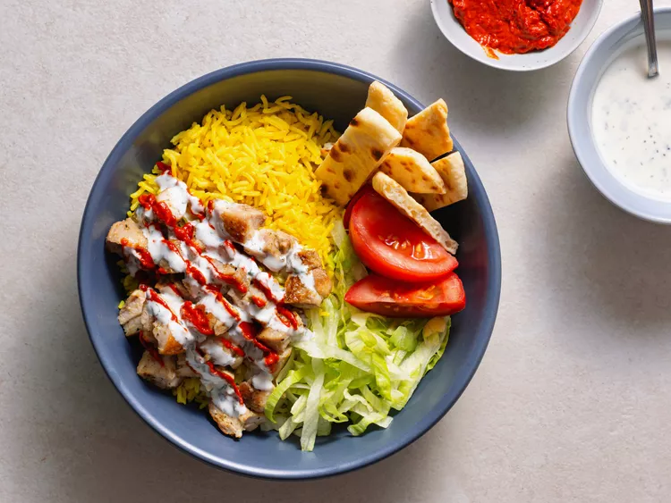

Back
Halal Cart-Style Chicken and Rice

Description
Manhattan is home to many smells, but perhaps the most delicious is the chicken-y, savory scent that emanates from from the city's countless halal carts. Serving lunch to late-night, these carts dish up a container full of chicken rice that tastes like nothing else, crave-worthy and totally singular. To taste this particular chicken and rice you can get yourself to Midtown or try this home version by Kenji, a spot-on rendition of the street food classic. Marinated in oregano, lemon, and coriander, chicken thighs are browned, chopped into chunks and served over a pile turmeric-yellow rice. Of course, it wouldn't be halal-cart style without the ubiquitous (and none too fancy) salad of iceberg and tomatoes, and that mysterious sweet-sour-tangy white sauce that just has to be ladled all over the chicken and rice for true street-style authenticity.
Ingredients
For the chicken:
- 2 tablespoons fresh lemon juice
- 1 tablespoon chopped fresh oregano
- 1/2 teaspoon ground coriander seed
- 3 garlic cloves, roughly chopped (about 1 1/2 tablespoons)
- 1/4 cup light olive oil
- Kosher salt and freshly ground black pepper
- 2 pounds boneless, skinless chicken thighs, trimmed of excess fat (6 to 8 thighs)
- 1 tablespoon vegetable or canola oil
For the rice:
- 2 tablespoons unsalted butter
- 1/2 teaspoon turmeric
- 1/4 teaspoon ground cumin
- 1 1/2 cups long-grain or Basmati rice
- 2 1/2 cups chicken broth
- Kosher salt and freshly ground black pepper
For the sauce:
- 1/2 cup mayonnaise
- 1/2 cup Greek yogurt
- 1 tablespoon sugar
- 2 tablespoons white vinegar
- 1 teaspoon lemon juice
- 1/4 cup chopped fresh parsley
- Kosher salt and freshly ground black pepper
To serve:
- 1 head iceberg lettuce, shredded
- 1 large tomato, cut into wedges
- Fluffy pocketless pita bread, brushed in butter, lightly toasted, and cut into 1 × 3-inch strips
- Harissa-style hot sauce, for serving
Steps
- For the chicken: Combine the lemon juice, oregano, coriander, garlic, and olive oil in a blender. Blend until smooth. Season the marinade to taste with kosher salt and black pepper. Place the chicken in a 1-gallon zipper-lock bag and add half of the marinade (reserve the remaining marinade in the refrigerator). Turn the chicken to coat, seal the bag, and marinate the chicken in the refrigerator for at least 1 hour and up to 4 hours, turning occasionally to redistribute the marinade.
- Remove the chicken from the bag and pat it dry with paper towels. Season with kosher salt and pepper, going heavy on the pepper. Heat the oil in a 12-inch heavy-bottomed cast iron or stainless-steel skillet over medium-high heat until it is lightly smoking. Add the chicken pieces and cook without disturbing until they are lightly browned on the first side, about 4 minutes. Using tongs, flip the chicken. Reduce the heat to medium and cook until the chicken is cooked through and the center of each thigh registers 165°F. on an instant-read thermometer, about 6 minutes longer. Transfer the chicken to a cutting board and allow to cool for 5 minutes.
- Using a chef's knife, roughly chop the chicken into 1/2- to 1/4-inch chunks. Transfer to a medium bowl, add the remaining marinade, cover loosely with plastic, and refrigerate while you cook the rice and prepare the sauce.
- For the rice: Melt the butter over medium heat in a large Dutch oven. Add the turmeric and cumin and cook until fragrant but not browned, about 1 minute. Add the rice and stir to coat. Cook, stirring frequently, until the rice is lightly toasted, about 4 minutes. Add the chicken broth. Season to taste with salt and pepper. Raise the heat to high and bring to a boil. Cover, reduce to a simmer, and cook for 15 minutes without disturbing. Remove from the heat and allow to rest until the water is completely absorbed and the rice is tender, about 15 minutes.
- For the sauce: In a small bowl, combine the mayonnaise, yogurt, sugar, vinegar, lemon juice, parsley, and 2 teaspoons black pepper. Whisk to combine. Season to taste with salt.
- To serve: Return the entire contents of the chicken bowl (chicken, marinade, and all juices) to the skillet. Cook over medium-high heat, stirring occasionally, until heated through. To serve, divide the rice, lettuce, tomato, and toasted pita bread evenly among four to six plates. Pile the chicken on top of the rice. Top with the white sauce and hot sauce. Serve immediately, passing extra sauce at the table.